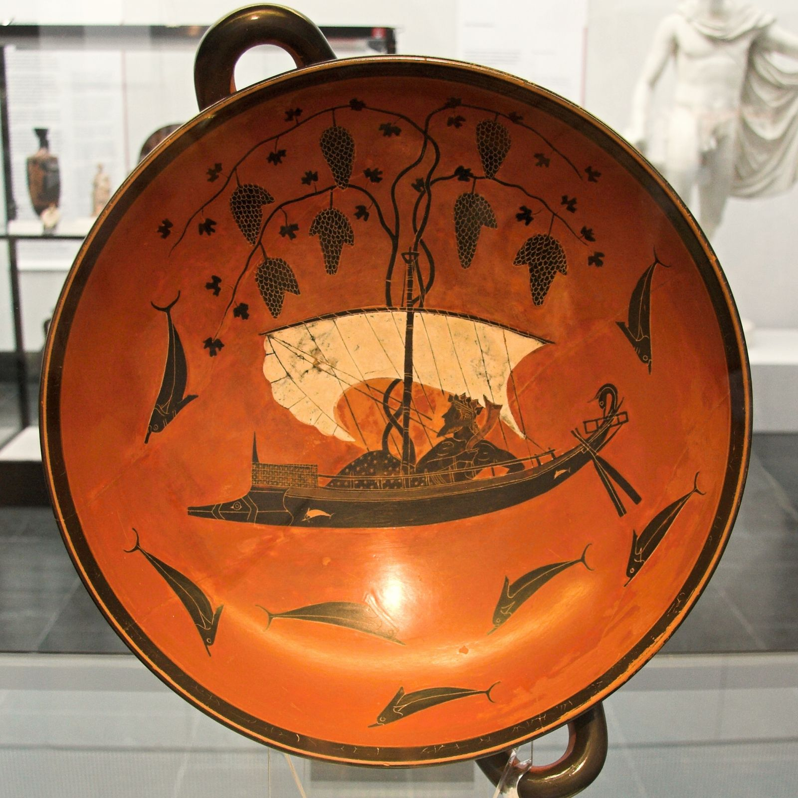

God of Wine, Ecstasy and Theatre, the Twice-Born

Exekias, Dionysus in a Sailing Ship, black-figure kylix interior, c. 530 BC — Staatliche Antikensammlungen, Munich
Dionysus is the god of wine, ecstasy, theatre and transformation: the force that dissolves the boundary between self and world, sanity and rapture, human and animal, actor and role. He is unique among the Olympians in two respects. He is the only one born of a mortal woman, Semele of Thebes, and he is the only one who ever reversed that fact, descending into the underworld to raise his dead mother into godhood herself. He is also twice-born: torn from Semele's incinerated body while still unformed and sewn into the thigh of Zeus to finish gestating, a god assembled from two separate deaths before he ever drew breath. Where the other Olympians guard fixed and defended portions of the cosmic order, Dionysus arrives from outside it, from Thrace, from Lydia, from Phrygia, a latecomer whose worship the Greek cities had to be persuaded, or terrified, into accepting. He does not administer a domain so much as dissolve one, wherever wine, ritual madness, tragedy or ecstatic dance lets the ordinary self come loose from its moorings.
The MythsZeus fell in love with the Theban princess Semele, daughter of Cadmus, and visited her in secret. Hera, discovering the affair, disguised herself as Semele's old nurse and, feigning doubt, suggested she ask her lover to reveal himself in his full divine glory as proof of who he truly was. Zeus had already sworn by the Styx to grant Semele any request and could not refuse: he appeared in his unveiled splendour, lightning and all, and the sight incinerated her on the spot. Euripides' Bacchae opens on exactly this ruin, the god himself narrating the destruction of his mother's house as prologue. But Semele was pregnant, and Zeus snatched the unborn child from the flames, unformed, and stitched it into his own thigh to carry to term. Apollodorus (3.4.3) gives the fullest surviving account of the rescue and second birth: when the months were complete, Zeus opened the wound and Dionysus emerged, fully formed, the twice-born, gathered once from his mother's ashes and once from his father's body. Fearing Hera's jealousy still, Zeus entrusted the infant to Hermes, who, as his own page tells, carried the god across the world to the nymphs of Mount Nysa to be raised in hiding. No other Olympian owes his existence to two separate deaths, and none carries so plainly the mark of it: a god born from destruction who is nothing but transformation ever after.
The Homeric Hymn to Dionysus (Hymn 7, probably 6th century BC) tells of the god's first return to the human world as a young man of extraordinary beauty, standing alone on a headland by the sea. Tyrrhenian pirates, taking him for a prince worth ransoming, seized him and bound him with rope, but the ropes fell away from his wrists of their own accord. Only the helmsman recognised a god at work and begged his crewmates to release their captive; they refused, mocked him, and set sail regardless. Wine then flooded the deck, unbidden, filling the ship with its fragrance; a vine climbed the mast and spread across the sail, hung heavy with grapes, and ivy wound about the rigging. Dionysus turned into a lion and conjured a bear beside him, and the terrified crew leapt overboard into the sea, where he transformed them, one by one, into dolphins. Only the helmsman, who alone had recognised him, was spared and blessed. The scene became one of the most painted subjects in Greek vase art, most famously the black-figure kylix by Exekias used as this page's image, where the god reclines in a ship whose mast has become a vine heavy with grapes, dolphins circling the hull. It is Dionysus' founding demonstration of what happens to those who fail to recognise him: not punishment exactly, but transformation applied to people who tried to contain him as cargo.
Euripides' Bacchae (405 BC) is the fullest and darkest telling of the resistance myth. Dionysus arrives in his native Thebes, disguised as a mortal priest of his own cult, to establish his worship and to punish the house that denies his divinity: his aunts had claimed Semele lied about her lover's identity, and his cousin Pentheus, the reigning king, refuses to acknowledge the god at all, banning his rites and imprisoning his followers. Dionysus answers not with a direct strike but with derangement: he drives the Theban women, Pentheus's own mother Agave among them, out onto Mount Cithaeron in a divine frenzy, and lures the curious, priggish king into spying on their rites disguised as a woman himself. Pentheus is discovered by the maenads in his ecstatic company and, in their god-sent madness, mistaken for a mountain lion. His own mother leads the tearing apart of his body with her bare hands, carrying his head back into the city in triumph before the madness lifts and she understands what she is holding. The play is Greek tragedy's most complete study of what happens when a rigid, controlling consciousness meets the force it has refused to admit exists: not defeat but dismemberment. Dionysus is not cruel for its own sake in the text; he simply is what he is, and denying him carries a cost exactly proportional to the denial.
After helping Theseus escape the Cretan labyrinth, Ariadne, daughter of King Minos, fled with him only to be abandoned, asleep, on the island of Naxos; accounts differ on whether Theseus forgot her, chose to leave her, or was compelled to by divine instruction, but every version leaves her alone on the shore watching his ship disappear. Dionysus, arriving on Naxos in his own right, found her there, grieving and betrayed, and married her instead. Hesiod's Theogony (947-949) records the union in its genealogical roll call of the gods, naming their marriage and noting that Zeus made Ariadne ageless and immortal for her husband's sake, a distinction almost no mortal wife of a god receives. Later tradition set her bridal crown, a gift from Dionysus at the wedding, among the stars as the constellation Corona Borealis. Where most divine marriages on Olympus are political, brief or unfaithful, the sources treat this one as genuine and lasting: the god who found a woman discarded by a mortal hero raised her instead to his own condition. It is one of the few love stories in Greek myth where abandonment by one power becomes, by chance and by choice, elevation by another.
Dionysus did not forget the mother he never knew as a living woman. Apollodorus (3.5.3) and Pausanias (2.31.2 and 2.37.5) record his descent into the underworld to bring Semele back, the only Olympian myth in which a god goes down to reverse a mortal's death for love rather than mere retrieval. Pausanias, describing the region around Lerna, notes that the Lernaeans showed visitors a bottomless pool near the Alcyonian lake through which Dionysus was said to have descended into Hades, and that Argive tradition kept the memory of the site as a place of genuine cult significance rather than mere legend. Having found Semele among the dead, Dionysus persuaded the underworld to release her and carried her up to Olympus, where she was received among the gods under a new name, Thyone, no longer the mortal princess incinerated by her lover's glory but a goddess in her own right. It is the single clearest instance in the whole mythology of an Olympian reversing death outright, and it belongs, tellingly, to the god whose entire nature is the dissolving of fixed boundaries: between mortal and immortal exactly as much as between sober and ecstatic, actor and role, self and god.
Epithets and DomainsThe thundering, tumultuous aspect, invoked constantly in the Bacchae and in cult hymns: the god's arrival announced in noise, drums and shouting.
Of cares and inhibitions: wine as the god's mechanism of release, the aspect invoked at the symposium.
The name that gave the Roman Bacchus, and the one his frenzied worshippers, the Bacchants, took as their own: the identity behind the cult's noun.
Named for the town on the Attica-Boeotia border from which his cult image was said to have been brought to Athens. Under this title the City Dionysia was staged in his honour, the festival from which Athenian tragedy and comedy grew.
The vegetation god beyond the vine: guardian of trees and greenery generally, attested in cult across several Greek regions.
The dark, sacrificial aspect, attested for Lesbos by the poet Alcaeus. Worth naming honestly rather than smoothing over: the ecstatic god and the frightening one are the same god.
Shouted in procession at the Eleusinian Mysteries, linking Dionysus to the rites of Demeter and Persephone. Whether Iacchos began as a separate daemon later merged with Dionysus, or was always an aspect of him, is disputed among scholars.
Tied, on one reading, to his double birth. The name of the choral hymn sung in his honour, from which Greek tragedy is said by tradition to descend.
Dionysus is the archetype of ecstasy and dissolution: the force that unmakes the boundaries the other gods spend their myths defending. Nietzsche built his whole account of tragedy on the polarity between this god and Apollo, form against flood, and the pairing still holds: where Apollonic consciousness clarifies and separates, Dionysian consciousness merges, intoxicates and renews. Carl Kerényi, in the study Jungians still treat as definitive, named him the archetypal image of indestructible life: not biological survival but zoe, the life that persists through every dismemberment, the vine cut back to the stump that fruits again. Jean Shinoda Bolen, in Gods in Everyman, draws him as the ecstatic and the mystic: the man closest to women and to his own emotional depths, at home in intensity, a stranger to moderation in both directions.
The light expression is renewal. Dionysus consciousness can still merge with something larger (music, a crowd, a love, a god), which the armoured archetypes cannot, and it returns from the merger alive. It is the capacity for embodied joy without irony; the theatre's gift of trying on other selves (every mask worn in every rehearsal room belongs to him, and all surviving Greek drama premiered at his festival); and radical inclusion: his cult admitted women, slaves and foreigners when the civic religion did not. The myths also grant him two loyalties unique on Olympus: the faithful marriage to Ariadne, and the descent into death itself to bring his mortal mother out. The god of dissolution is, at his best, the most devoted of them all.
The shadow is the flood and the tearing. Pentheus is the standing warning, and it is aimed at the deniers, not the drinkers: what is locked out does not go away, it gathers outside the wall and arrives with force proportional to the denial, and the king who refused the god ends dismembered by his own mother. In a person this is the respectable life that detonates: the addiction, the affair, the breakdown at fifty, chaos presenting as a stranger when it was a citizen all along. Within the pattern itself the shadow is sparagmos, the tearing-apart: intoxication as escape rather than communion, the self dissolved so often it stops re-forming, the charismatic thiasos that becomes a cult. The Greek solution was neither abstinence nor surrender but calendar: the god honoured on schedule, contained by festival, given his season and then handed back.
In Modern LifeDionysus is wherever ecstasy is sold, sought or feared: festivals and dance floors, theatre and live music, wine culture and drug culture, mysticism and mania. He is the performer who only exists fully on stage; the founder whose company is a thiasos, all belonging and intensity and dissolved boundaries; the brilliant colleague whose gift and whose problem are the same appetite. He is also, crucially, present by absence: the burnout culture that bans him Monday to Friday and binges him at the weekend is not post-Dionysian, it is Pentheus's Thebes with better lighting.
In coaching, the pattern shows up on both sides of its own gate. The Dionysian client needs containment without exile: rhythm, season, the festival calendar's wisdom (ecstasy scheduled is ecstasy survivable), and honest work on where communion has slid into escape; the recovery movement's insight that the addict is a mystic in the wrong church is this god's case history exactly. The counter-Dionysian client, far more common in leadership work, is the Pentheus: rigid, over-governed, contemptuous of everything unmeasured, and heading for an arrival. For them the work is small doses of the god on purpose (music, dance, theatre, anything that loosens without wrecking), before life administers the dose unsupervised. The diagnostic question for both is the same: where does the flood enter your life, and did you choose the entry point?
Leaders and organisations get one Dionysian law for free: he is the god of what returns. Cut the vine, imprison the stranger, ban the festival; the myths run the experiment five ways and the result never varies. Anything a person or a culture needs and refuses will come back wearing a stranger's face, and it is cheaper to build it a temple than to meet it at the door.
CorrespondencesNone in the Greek system; modern astrological assignments for him are convention.
Winter into early spring, on the strength of his festival cycle: the Athenian months Poseideon through Elaphebolion were his, four festivals in succession. He is a god with a season rather than a day.
Wine-dark purple, ivy green. Modern convention, though both follow his plants and his cup naturally.
The thyrsus (the fennel staff topped with a pine cone, carried by god and worshipper alike), the kantharos wine cup, the mask (his cult object and his theatre's), the ivy crown, the ship-cart of his processions.
The panther or leopard, his mount and companion in art; the bull, the form the hymns beg him to appear in; the goat, whose name may hide inside "tragedy", the goat-song; the serpent of the maenads; the dolphin, from the pirates he transformed.
The grapevine and the ivy, securely and everywhere his; the giant fennel (narthex) whose stalk is the thyrsus, and which is also the stalk Prometheus carried fire in; the pine, from the thyrsus cone. Beyond these, plant lists are modern convention.
Wine, poured and drunk; figs and honey cakes; the goat, his standard sacrifice; and at the rustic festivals, the phallic procession, fertility honoured without euphemism. The Greeks normally drank wine mixed with water; drinking it neat was itself marked behaviour, which gives a modern practitioner a ready-made ritual distinction between the daily and the sacred cup.
The Athenian cycle: the rural Dionysia; the Lenaia; the Anthesteria, the uncanny three-day flower festival where the new wine was opened, every drinker sat crowned and silent with a private jug, and the dead walked the city; and the City Dionysia, the theatre festival at which every surviving Greek tragedy and comedy was first performed.
Thebes, his birthplace and his battleground; Naxos, the island of the marriage; the theatre of Dionysus Eleuthereus beneath the Athenian Acropolis; Nysa, the mountain of his childhood, which the Greeks located everywhere and nowhere; and Delphi, in winter.
None attested; his observances were festival-based and seasonal.
The Delphi arrangement is the practice note, and it may be the wisest thing the Greek tradition ever said about the psyche. For the three winter months, Plutarch records, Apollo left Delphi for the Hyperboreans and the sanctuary belonged to Dionysus: dithyrambs replaced paeans, and the god of ecstasy kept the house of the god of clarity. The oracle itself ran on both: one shrine, two tenants, in rotation, neither evicted. A practice, a psyche or an organisation that gives its Dionysus a scheduled tenancy in its most sacred real estate, rather than a padlocked cellar, is following the oldest and best-tested containment design on record.
Zeus and the mortal Semele, daughter of Cadmus of Thebes, raised again to divinity as Thyone
Ariadne of Crete: the marriage the sources treat as genuinely faithful, a rarity on Olympus
The thiasos: satyrs, maenads, old Silenus his tutor, and Pan on the edges
Hera, persecutor of his whole line from Semele onward; Pentheus and Lycurgus, the resisters, both destroyed; Hephaestus, whom he famously escorted home to Olympus, drunk on wine in most tellings; Hermes, his carrier as an infant; Demeter, his partner in the two great gifts to humanity, bread and wine